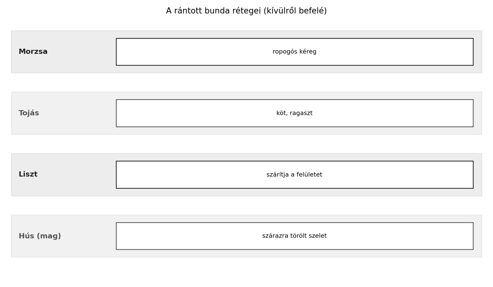

Egy éttermi ebédidőben a rántott szelet a legnépszerűbb főétel. A vendég azt várja, hogy a panír ropogós, aranybarna, jól tapadjon a húshoz, és a hús belül szaftos maradjon. Ha a bunda leválik, a szelet kiszárad, az olaj megtelik morzsával, és az egész adag hulladék lesz. A szakácsnak tehát nem elég „lisztbe-tojásba-morzsába” forgatni a húst: pontosan ismernie kell a bundázás célját, a sor felépítését, a tojás és a morzsa szerepét, a gluténmentes változatokat és az olaj védelmét. Ebben az alfejezetben a bundázási eljárásokat tanuljuk meg úgy, hogy a panír ne csak szép, hanem élelmiszer-biztonsági szempontból is kifogástalan legyen.
Képzelj el három tálcát egymás mellett egy konyhai munkaasztalon. Balról jobbra haladva: az elsőben liszt, a másodikban felvert tojás, a harmadikban zsemlemorzsa. A szakács a bal, „száraz” kezével a lisztbe forgatja a kiklopfolt hússzeletet, és a tojásba ejti; a jobb, „nedves” kezével a tojásban megforgatja, és a morzsába emeli; a morzsát ismét a száraz kéz nyomkodja rá. A kezek munkamegosztása azért fontos, mert így nem ragad össze minden ujj, és a panírrétegek egyenletesek maradnak. Ez a háromlépéses sor a bundázás alapja. A sor végére a hús felületén vékony réteg képződik, amely sütéskor elzárja a hús nedvességét a forró olajtól.
Definíció. A bundázás olyan befejező előkészítő művelet, amelynek során a húst, halat, zöldséget, sajtot vagy más alapanyagot réteges bevonattal látjuk el, hogy sütéskor ropogós külső kéreg alakuljon ki, a belső rész szaftos maradjon, és az étel esztétikus, aranybarna felületet kapjon.
A bunda nem csupán dísz. Négy feladatot lát el:
A bundázás alapanyagai:
| Alapanyag | Szerepe a bundában | Jellemző hiba |
|---|---|---|
| Finomliszt | Előréteg, amely felszívja a nedvességet, és tapadófelületet ad a tojásnak | Ha túl vastag, a bunda lisztízű marad |
| Tojás | Kötőanyag, amely a lisztet és a morzsát összetartja | Ha nincs felverve, csomós lesz; ha túl híg, lefolyik |
| Zsemlemorzsa | Ropogós, aranybarna külső réteg | Ha nedves, gőzöl, nem pirul |
| Tej vagy tejszín | Dúsítja a tojást, puhábbá teszi a bundát | Túl sok folyadék esetén a panír leesik |
| Fűszerek | A bunda ízesítése | A só a sütőolajban gyorsítja a bomlást |
Megjegyzés. A panír sütéséhez használt olaj minősége és hőfoka legalább annyira fontos, mint a panír maga. A megfelelő hőfok 170–180 °C körül van (ellenőrizendő: a konkrét üzemi hőmérséklet a technológiai utasításban). Ha az olaj túl hideg, a bunda sok zsiradékot szív fel és elázik. Ha túl forró, a morzsa megég, miközben a hús belül nyers maradhat.
Szabály. A klasszikus rántott bunda sorrendje mindig: liszt → felvert tojás → zsemlemorzsa. Ez a sorrend azért működik, mert a liszt megszárítja a hús felületét, a tojás rátapad a lisztes rétegre, a morzsa pedig beleragad a tojásba. Ha a sorrendet felcserélnénk, a bunda nem tapadna.
Eljárás. A bundázási sor kialakítása a konyhán:
Az állomás felső sora a fenti 1–6. lépés (nyers zóna), a bundázott tálca a 7. lépés; az olajsütőtől kezdve már a kész étel útja jön (kész zóna), ahol más fogót, más tálcát használsz. A „száraz kéz” csak a lisztet és a morzsát, a „nedves kéz” csak a tojást érinti – így nem ragad meg az ujjadon a panír. A HTML-kiadásban az 1–8. állomásra kattintva megjelenik az állomás szabálya és tipikus hibája.
A bunda rétegeit metszetben az alábbi ábra mutatja: mindegyik réteg feladata más.

Higiénia. A nyers tojás szalmonella hordozó lehet (ellenőrizendő: a tojásra vonatkozó higiéniai előírások a NÉBIH útmutatóban). A bundázó asztalon a nyers tojásos edények, a liszt és a morzsa elkülönítve legyenek. A panírozás után azonnal moss kezet, és tisztítsd meg a munkafelületet, mielőtt más élelmiszerhez nyúlsz.
A három alapvető bundázási módszert a felhasznált rétegek és a kész bunda állaga különbözteti meg.
Rántott (bécsi) módszer. A húst lisztbe, felvert tojásba, majd zsemlemorzsába forgatjuk. Ez a legismertebb magyarországi bundázás. A kész bunda vastag, ropogós, aranybarna. Az ételt bő zsiradékban, 170–180 °C-on sütjük, majd papírtörlőre szedjük.
Párizsi módszer. A húst csak lisztbe, majd felvert tojásba forgatjuk. Nincs morzsa. A sütés során vékony, lágyabb, omlettszerű bevonat képződik. Ez a módszer gyors, de a bunda kevésbé ropogós. Jellemzően vajban vagy kevés olajban, serpenyőben sütjük.
Orly módszer (sörtészta). A bundázáshoz nem külön rétegeket használunk, hanem egy sűrű, palacsintatésztaszerű masszát, amelyhez sört adunk. Az alapanyagot először vékonyan lisztbe mártjuk, majd a sörtésztába, és azonnal forró olajba tesszük. A sörtészta a sütés első pillanatában felfújódik, ropogós, vastag héjat képez. Az orly módszert gyakran halakhoz, zöldségekhez, sajtokhoz használjuk.
Táblázat. A három módszer összehasonlítása:
| Módszer | Rétegek | A bunda állaga | Tipikus felhasználás |
|---|---|---|---|
| Rántott | liszt, tojás, morzsa | vastag, ropogós | rántott hús, sajt, gomba |
| Párizsi | liszt, tojás | vékony, lágy | csirkemellfilé, borjúszelet |
| Orly | liszt, sörtészta | vastag, levegős | hal, zöldség, sajt |
A zsemlemorzsa helyett más bevonóanyagokat is használhatunk, hogy a bunda ízét, állagát és megjelenését változatossá tegyük.
Morzsás bundák. A klasszikus zsemlemorzsa mellett használhatunk:
Allergén. A szezámmag (szezámmag) és a dió, mogyoró (diófélék) a 14 jelölésköteles allergén közé tartozik; a magvas bunda a sütőolajba kerülő morzsával a később sült ételeket is szennyezheti – a vendéget tájékoztatni kell, allergiás vendéghez külön olaj kell.
Magvas bundák. A morzsa egy részét vagy egészét helyettesíthetjük olajos magvakkal. A szezámmag, a tökmag, a napraforgómag, a darált dió vagy mogyoró karakteres ízt ad. A magvas bundában a morzsa és a mag keverékét használjuk, mert a tisztán magvas réteg könnyen leég.
Figyelem. A magvak magas zsírtartalmúak, ezért sütéskor gyorsabban pirulnak, mint a morzsa. A hőfokot alacsonyabbra vesszük, és a sütési időt rövidebbre, miközben a belső hőmérsékletet is ellenőrizzük.
Allergén. A klasszikus panír glutént tartalmazó gabonafélékből készült lisztet és zsemlemorzsát tartalmaz. Gluténérzékeny vendég esetén a liszt és a morzsa is gluténmentes alapanyagból készüljön, és a panírozást elkülönítve végezzük.
Gluténmentes bundázáshoz csak gluténmentes jelölésű alapanyagot használhatunk:
A gluténmentes bunda gyakran kevésbé tapad, ezért a tojást érdemes sűrűbbre felverni, vagy a lisztbe kevés kukoricakeményítőt keverni. A panírozott szeletet sütés előtt érdemes 10–15 percig hűtőben pihentetni, hogy a rétegek megszilárduljanak.
Kritikus pont. Gluténmentes bundázásnál a keresztszennyeződés elkerülése a legfontosabb. A gluténmentes lisztet és morzsát külön tároljuk, saját cimkével. A panírozó edényeket, tálcákat, csipeszeket használat előtt alaposan mossuk el. A sütőolaj is szennyeződhet gluténnel, ezért gluténmentes ételhez friss olajat vagy külön olajsütőt kell használni (ellenőrizendő: az üzem HACCP-tervének gluténmentes eljárásai).
A leggyakoribb hiba a rántott ételeknél, hogy a bunda sütés közben leválik a húsról. Ennek több oka lehet:
| Ok | Következmény | Megoldás |
|---|---|---|
| A hús felülete nedves | A liszt nem tapad, a bunda elcsúszik | Töröld szárazra a húst panírozás előtt |
| Túl vastag liszt- vagy morzsaréteg | A bunda megreped, és leválik | Rázd le a felesleget, és finoman nyomkodd rá a morzsát |
| A panírozott hús sokáig áll | A morzsa megszívja magát nedvességgel | Süsd azonnal, vagy legfeljebb rövid ideig hűtve tárold |
| Az olaj nem elég forró | A bunda lassan sül, a gőz fellazítja | Ellenőrizd az olaj hőmérsékletét (170–180 °C) |
| Sütés közben forgatás, szurkálás | A bunda mechanikailag sérül | Óvatosan, csipesszel vagy lapáttal fordítsd |
Szabály. A panírozott húst sütés közben csak annyiszor fordítsd, amennyiszer szükséges. A villával történő átszúrás károsítja a bundát és a húsból kiengedi a nedvességet.
Az ábra a fenti táblázat hibáit mutatja metszetben, mindegyik alatt az ok és a megoldás. A legveszélyesebb a 4. kép: a kéreg már sötét, de a maghőmérő szerint a hús közepe még nyers – a szín itt félrevezet, a hőmérő dönt. A HTML-kiadásban egy szeletre kattintva megjelenik a hiba oka és megoldása.
A panírozás során a morzsa és a liszt apró részecskéi óhatatlanul az olajba kerülnek. Ezek a részecskék megégnek, és felgyorsítják az olaj bomlását.
Figyelem. A sötét, zavaros, kellemetlen szagú olaj nemcsak az étel minőségét rontja, hanem élelmiszer-biztonsági kockázatot is jelent. Az olajat rendszeresen szűrni kell, és a túlhasznált olajat lecserélni (ellenőrizendő: az üzemi olajcsere gyakorisága a HACCP-tervben).
Az olaj védelmének módszerei:
Adagszám: 10 adag
Adagsúly: 180 g sült hús + köret + díszítés
Anyaghányad-táblázat
| Nyersanyag | Mennyiség 10 adagra | Megjegyzés |
|---|---|---|
| Sertés rövidkaraj | 1,6 kg | kiklopfolva, adagonként 160 g |
| Finomliszt | 200 g | panírozáshoz |
| Tojás | 5 db (M, 55 g/db, kb. 275 g) | felverve (tanulási érték, ellenőrizendő) |
| Zsemlemorzsa | 400 g | panírozáshoz |
| Só, őrölt bors | ízlés szerint | a hús fűszerezéséhez |
| Olaj a sütéshez | szükséges mennyiség | bő olaj |
Allergének: glutén (liszt, zsemlemorzsa), tojás.
Eszközök és gépek: klopfoló, három lapos tálca, konyhai papírtörlő, bő olajban sütéshez alkalmas edény, hőmérő, csipesz, tálca, sütőpapír.
Előkészítés
Elkészítés
Kritikus pontok
Készentartás és tálalás
A rántott szeletet frissen sütve tálaljuk. Köretként petrezselymes burgonya, párolt rizs, zöldségköret vagy saláta illik hozzá. Ha készentartásra van szükség, a szeleteket sütőrácson, kb. 70–80 °C-os sütőtérben, legfeljebb 20–30 percig tartsd; a maghőmérséklet ne essen a melegen tartási határ alá, és tálalás előtt ellenőrizd a hőmérsékletét (ellenőrizendő: HACCP-terv).
Minőségi követelmények
Tipikus hibák és javításuk
Változatok
Cél. A tanuló önállóan kialakítja a bundázó munkaállomást, és szakszerűen paníroz csirkemellfilét.
Eszközök és anyagok. Csirkemellfilé, liszt, tojás, zsemlemorzsa, só, bors, három lapos tálca, konyhai papírtörlő, hőmérő, bő olajban sütésre alkalmas edény, csipesz, tálca.
Biztonsági korlát. Ezt a műveletet tankonyhán vagy oktatói felügyelettel gyakorold; otthon csak a leírt biztonsági feltételekkel. A bő olajos sütésnél tilos a vizes kéz és a nedves étel; zsiradéktüzet tilos vízzel oltani.
Higiéniai előkészület. Moss kezet, köss kötényt, a hajat fogd össze. A nyers csirkemellfilét és a tojást kezeld elkülönítve más alapanyagoktól.
Számozott lépések
Ellenőrzési pontok
Dokumentálás. A gyakorlat során rögzítsd a sütési hőmérsékletet, a maghőmérsékletet és a sütési időt.
A bundázott ételeket a következő mérhető és érzékszervi szempontok szerint ellenőrizzük:
Egy panzió konyháján a szakács délben rántott sajtot készített. A panírozás után a sajtszeleteket legalább két órán át a konyhán, szobahőmérsékleten tárolta, mert a vendégek később érkeztek. A morzsa közben megszívta magát a sajtból kiizzadó nedvességgel és zsírral, és a bunda sütéskor levált. Ráadásul az olaj tele lett leégett morzsával, sötét és szagos lett. A vendégek a rántott sajt helyett végül omlettet kaptak. A hiba oka: a panírozott sajt hosszú ideig állt, és az olajat nem szűrték meg sütés közben. A nyers tojásos panírral bevont, hűtést igénylő sajt a hűtőn kívül a veszélyes hőmérsékleti zónában állt: ez élelmiszer-biztonsági hiba is. A tanulság: a panírozott, sütésre váró terméket 5 °C alatt kell tartani (ellenőrizendő: HACCP-terv); a bundázott ételeket azonnal sütni kell, vagy legfeljebb rövid ideig hűtve tárolni, és a sütőolajat folyamatosan tisztán kell tartani.
Önellenőrzés – válaszok
1. feladat (A) Sorold fel a rántott bundázás három rétegét a helyes sorrendben!
2. feladat (A) Milyen alapanyagokkal készíthetünk gluténmentes bundát? Nevezz meg legalább hármat!
3. feladat (B) Csoportosítsd a következő ételeket a megfelelő bundázási módszerhez: rántott csirkemell, párizsi borjúszelet, orly halrudak, rántott sajt, sörtésztás zöldség, natúr csirkemell.
4. feladat (B) Számítsd ki, mennyi zsemlemorzsa szükséges 25 adag rántott sertésszelethez, ha 10 adaghoz 400 g morzsát ír elő a technológiai lap!
5. feladat (C) Tervezd meg egy gluténmentes rántott sajt technológiai lapjának allergén-kritikus pontjait! Milyen lépésekkel akadályoznád meg a keresztszennyeződést?
6. feladat (D) A gyakorlati útmutató alapján panírozz be 3 szelet csirkemellfilét. Közben ellenőrizd az olaj hőmérsékletét, és a kész szelet maghőmérsékletét. Rögzítsd az adatokat egy egyszerű táblázatban!
1. feladat (A) A helyes sorrend: liszt → felvert tojás → zsemlemorzsa. A liszt szárít, a tojás köt, a morzsa ropogós réteget ad.
2. feladat (A) Gluténmentes lisztkeverék, kukoricaliszt, rizsliszt, burgonyakeményítő, gluténmentes zsemlemorzsa, kukoricadara.
3. feladat (B) Rántott módszer: rántott csirkemell, rántott sajt. Párizsi módszer: párizsi borjúszelet. Orly módszer: orly halrudak, sörtésztás zöldség. A natúr csirkemell nem bundázott étel.
4. feladat (B) Adott: 10 adaghoz 400 g morzsa. Keresett: 25 adaghoz szükséges morzsa. Számítás: . Tehát 25 adaghoz 1 kg zsemlemorzsa szükséges.
5. feladat (C) A gluténmentes rántott sajt kritikus pontjai: - A sajt és a panír gluténmentes legyen. - A panírozó edényeket külön, alaposan tisztítsuk. - A sütőolaj friss legyen, ne használjunk olyan olajat, amelyben korábban gluténtartalmú (búzalisztes, zsemlemorzsás) panírozott étel sült; gluténmentes ételhez friss olaj vagy külön olajsütő kell. - A gluténmentes morzsát címkézett, zárt dobozban tároljuk. - A vendég tájékoztatása: a fogás gluténtartalmú összetevő nélkül, elkülönített eszközökkel és friss olajban készül; a konyhában glutént is feldolgozunk, ezért nyomokban előfordulhat (ellenőrizendő: üzemi allergénprotokoll; a „gluténmentes” megnevezés szabályozott, ellenőrizendő: 828/2014/EU).
6. feladat (D) A megoldás a gyakorlat során rögzített adatok alapján: a sütőolaj hőmérséklete 170–180 °C legyen, a csirkemell maghőmérséklete legalább 75 °C (ellenőrizendő: NÉBIH-útmutató). A táblázatban rögzítsd az olaj kezdő hőfokát, a sütési időt és a maghőmérsékletet.
A bundázás a hús, hal, zöldség vagy sajt védő bevonattal való ellátása sütés előtt. A klasszikus rántott bunda sorrendje: liszt, felvert tojás, zsemlemorzsa. A liszt szárítja a felületet, a tojás összetart, a morzsa ropogós réteget ad. A párizsi bundánál csak lisztet és tojást használunk; az orly sörtészta, amely felfújódik és vastag bunda alakul ki. A morzsa helyettesíthető pankóval, magvakkal vagy gluténmentes alapanyagokkal. A bunda leválásának fő okai: nedves felület, túl vastag rétegek, túl hideg olaj, hosszú tárolás. A sütőolajat 170–180 °C-ra melegítjük, és rendszeresen szűrjük, hogy ne égjen meg a morzsa (ellenőrizendő: üzemi utasítás). Gluténmentes panír esetén elkülönített eszközöket és friss olajat használunk. Továbbvitt eredmény. A bundázási sort és a panírozás lépéseit a Zöldségből és főzelékféléből készülő meleg előételek alfejezetben használjuk majd fel. A panírozott ételek sütésekor mindig ellenőrizzük a maghőmérsékletet; a biztonságos érték legalább 75 °C (ellenőrizendő: NÉBIH-útmutató).